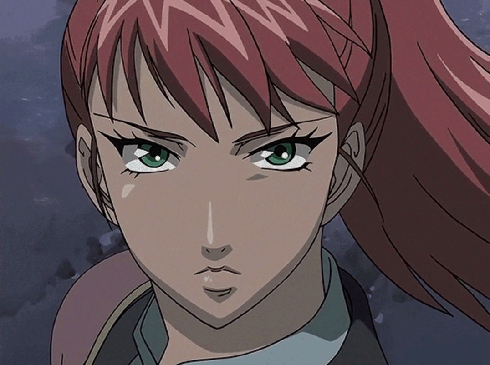

We are familiar with the western fantasy worlds, like Harry Potter, Game of Thrones and others. But do you know about the eastern fantasy world? Maybe you are an anime fan and you are familiar with One Piece, Naruto or something else. However, I bet you’ve never heard of The Twelve Kingdoms.
The Twelve Kingdoms is a series of fantasy novels written by Fuyumi Ono, then made into an anime in 2002.
The world of the Twelve Kingdoms is based on the coexistence of youma (monsters), and sages. This world is similar to ancient China, particularly during the Zhou dynasty.
There are twelve kingdoms, twelve kings and twelve kirins. Kirin are hybrid creatures that resemble a horse and a deer. They have a single horn on their foreheads, similar to a unicorn. Kirin can shift into human form. Each kingdom has its own kirin.
Kirin
Kings don’t inherit the kingdom from their predecessors. The kings of the twelve kingdoms are selected by the Kirin following the will of Tentei, the Emperor of Heaven.
Kirin
In the world of The Twelve Kingdoms, a king must follow three rules, or he will die. The first rule is working hard to run his country. If the king does a great job, he will be undead and ageless, like vampires. If the king becomes brutal, unmerciful, he loses his way and fails to govern properly, the kirin will be sick. This is called Shitsudou.

Sicked Kirin
If the king persists being wrongheaded, the sickness of the kirin gets worse and, ultimately, causes the kirin to die. If the kirin dies, the king will lose the mandate of heaven and eventually will die within a year of the kirin's death.
Typically, a king with a long and stable reign will have a prosperous and thriving kingdom, while short-lived monarchs tend to leave their kingdoms in a state of turmoil; if this happens, wild youma (monsters) appear, and weather becomes harsh.
A Turmoil happenes when the king died.
The second rule is that the king can’t escape his responsibility to be the king. If the king decides to reject the will of Tentei, he will quickly die.
The third rule is that the king from one country can’t interfere, or send an army into battle to other countries without consent. If the king intervenes or dispatches his army, the king and the kirin will quickly die (触犯侵略之罪<觌面之罪>).
In this world, eight of the Twelve Kingdoms border at least one of these four seas, extending from the center like the petals of a flower. The kingdoms are surrounded by an endless sea called the Kyokai (虚海, Void Sea). At the center of the world there are Five Sacred Mountains surrounding the Yellow Sea (the Kokai), a barren wasteland of rock, desert, swamp, and thorns where youma inhabit.
Mount Hou is one of The Five Sacred Mountains. This is the mythic birthplace of kirins. All the kings of the Twelve Kingdoms must ascend in order to accept the mandate of heaven before they can claim their throne.
The Map of the Twelve Kingdoms
Before we begin the story of the Twelve Kingdoms, there is one last thing you need to know, Shoku. Shoku(蝕) are magical storms that connect the Twelve Kingdoms’ world to the lands of Hourai (Japan) and Kan (China). People might be transported between these two worlds during Shoku. The storms occur naturally and are extremely damaging to the world they impact. Unless absolutely compelled, kirin and highly ranked sages shall not cross between the worlds in this way.
This is what you need to know about the world of the Twelve Kingdoms. As one of Fuyumi's big fans, I’d like to invite you to enjoy this unique world through data visualization.
Book1
Shadow of the Moon, a Shadow of Shadows
Youko, who used to be a normal high-schooler in Japan, met a strange tall man with golden yellow hair. The man said "I'm Keiki, my lord. Follow me." He didn't exaplain why and he told: "Say that you accede!" After Youko said "I accede", she was suddenly attacked by a sea of youma and Keiki whisked her away to an unearthly realm. Youko is left with only a sword. This young girl had to quickly grow up to confront ensuing challenges. During the adventure, she gradually found she is not a normal person anymore.
The Cover of Book
There can be no doubt that the bubble of Youko is the biggest. She is the main character and this novel is talking about her adventure in the unknown world. Youko is regarded as a Kaikyaku after she went to the world of the Twelve Kingdoms. She was both hunted by the youma and the people in country Kou, because the king of Kou dislike Kaikyaku and Hanjyuu (a half-beast that has both a human and an animal form).
Youko is facing the youma.
And the second large bubble is Rakushun, Youko’s close friend, who is a shapeshifter. When Youko’s strength gave out and fell into a coma, Rakushun took her home, rather than reporting her to the local ruler. Though Youko was initially distrustful of Rakushun, he patiently took care of Youko. He is very intelligent and knowledgeable, teaching Youko essential skills on how to live in the world.
Youko went to the peaceful and prosperous country of En to find a way back to Japan, accompanied by Rakushun. During the travel, they became close friends. Also, the line between them is the thickest in the chart. The number is 117 times that they appeared together in the novel.

Rakushun took care of Youko.
The third biggest bubble is the sword, Suiguutou. It’s a sword that can be wielded only by the king of Kei. Its most dangerous ability is the power to present visions of past and future, and of places far-away to bewitch the wielder.
Sword and scabbard seal each other. The scabbard controls the sword's visions and prevents people from drawing the sword. The sword prevents the monkey spirit from getting loose. Youko loses the scabbard, and thus gets taunted by both visions and the monkey until she kills the monkey and picks up the dead scabbard.

Youko prepares to use the sword to kill the youma.
The fourth biggest bubble is Keiki, appearing 181 times and being highly related to Youko with 35 times when they show up together in the novel. As the kirin of the country Kei, Keiki should be more tightly linked with Youko. That’s because Keiki was captured and enchanted by Kourin, the kirin of Kou, according to the requirement of the king of Kou. In this case, Keiki is unable to speak, or return to human form. The king of Kou supported the sister of the previous empress of Kei as the fake empress. And Keiki remained a prisoner of the fake empress until Youko, aided by the King of En, rescues him and frees him from his enchantment.
After liberating Kei, Keiki and Youko focus on statecraft and politics. They are trying their best to rebuild this country.
Youko saved Keiki
Who Appears Most Often in the Novel
The bubble represents how many times the word appears in the novel.
The thickness of the line represents the times two words appear together.
If you hover over them, detailed information will appear in the tooltip.
Color of the Bubbles
Main Characters
Good Characters
Evil Characters
Both Good and Evil Characters
Not Live Animals
Background Info
Keiki: the kirin of country Kei. While he appears to be very quiet and hard to get closed to, he is very sincere and loyal to Youko. Because the previous empress unilaterally fell in love with him, he always keeps a distance with his new empress, Youko.
Kaikyaku: people from the sea who were caught in a Shoku from Japan and swept into the world of the Twelve Kingdoms. They are unable to speak or understand the native language and may be subject to persecution, particularly as a result of Shoku. But some Kaikyakus also bring rare things to the world, like paper, ceramics, print technology, medicine, and Buddhism.
Youma: creatures with supernatural powers, generally evil unless in the service of a kirin. They tend to appear in greater numbers when a kingdom lacks the king.

Youma
Rakushun: Youko’s close friend. He is a hanjyuu who is a shapeshifter, and can adopt the form of a rat or a person. Despite the discrimination as a citizen of the country Kou, Rakushun is proud of being a hanjyuu. He taught Youko a lot of things and accompanied her during a hard time.

Rakushun
King of Kou: the king made various efforts to capture and kill Youko, because he was afraid of Youko’s ascension to the throne of Kei, believing that she will bring the country the same prosperity as En and Kou, whose kings have ruled over 500 years. In that case, Kou will be poorest country.

Kourin (left) and the king of Kou (right)
Kourin: the kirin of Kou. She attempts to dissuade the King of Kou from attacking Youko and from losing faith in his own ability as a king. As a kirin, she is bound to obey his orders, regardless of her willingness to do so. She died because of the king’s shitsudou.
Book2
A Thousand Leagues of Wind, the Sky at Dawn
The book focuses on three girls: Youko, Suzu, and Shoukei, talking about the growth of these three girls and how they become great friends.

The Cover of Book
As the new empress of Kei, Youko is surrounded by advisors who bicker among themselves and offer contradictory advice. Desperate to learn enough about her kingdom to rule wisely, Youko is sent by Keiki to study with a wise teacher named Enho. When Enho is abducted, Youko seeks to save Enho, only to discover that the corruption in her kingdom runs much deeper than she ever imagined.
Suzu Oki, a Kaikyaku, used to serve the cruel mistress Lady Riyou, wanted to meet Youko because they are both Kaikyakus. So she went to Kei to meet Youko.
Suzu
Shoukei became a poor, heavy manual worker after the death of her father, the king of Hou. She wanted to go back to a princess' life. When she heard Youko is a new, young empress, she thought it's a great chance. In this case, she went to Kei to meet Youko.
The princess Shoukei
Even if they went to the province of Ei in Kei for different reasons, all of them fought for the same thing in the end.
Who Appears Most Often in the Novel
The bubble represents how many times the word appears in the novel.
The thickness of the line represents the times two words appear together.
If you hover over them, detailed information will appear in the tooltip.
Color of the Bubbles
Main Characters
Good Characters
Evil Characters
Both Good and Evil Characters
Not Live Animals
Background info
Riyou: a flying sage, she has been granted immortality, but does not participate in government affairs. Instead, she lives in the mountains and employs many servants. During the hundred years that Suzu serves her, Riyou is particularly abusive towards Suzu.

Riyou
Shoukou: the governor of the Shisui Prefecture in the Wa Province of Kei. His corruption is too great and the taxes he demands is 70%. He is called as “the wolf without a tail”. Luckily, some people, like Suzu, Koshou, came together to rebel against Shoukou. Youko also joined with the rebels when she discovers that Shoukou is responsible for abducting her mentor Enho.

Shoukou
Koshou: the charismatic leader of the Shisui rebels. A man with a strong sense of justice, he wants to make Wa Province a better place to live for the sake of his brother and all the people who are suffering under the corruption of Shoukou.

Koshou
Shitsudou: the situation when the king loses the way and fails to govern properly, at the same time kirin will be sick. If the king can’t realize his errors and mend his ways, kirin will get worse, even die. If the kirin dies, the king will die in one year after the kirin’s death.
Gekkei: the governor of Kei Province in Hou. He leads the rebellion against the king of Hou, becuase want to save people from the tyranny. After the rebellion, Gekkei refuses to lead the government as a temporary king. He retreats to the Kei Province to continue his duties as his governor.

Gekkei
Rakushun: Youko’s close friend. He is not only intelligent and knowledgeable, but also ingenuous and sweet.
Kantai: the general of the province of Baku. He is a hanjyuu that can take the form of a large bear, and he is incredibly strong, even in human form. He saves Shoukei after she threw a rock at Gahou's executioners.
Unlike the first novel, this one has three main characters. We can see the bubble of Suzu is the biggest, 634. The second bubble represents Shoukei, 553. The third biggest one is Youko, 464. Suzu and Shoukei wanted to see the empress of Kei because they are similar-age gils, so we can see their bubbles are linked by "Imperial Kei" and "girl".
Suzu
At the beginning of the story, Suzu thought she was the most miserable person in the world, because she can’t talk with other people as a Kaikyaku, then was forced to endure a great deal of abuse from her lord, Riyou. From the chart, the number is 42 when Suzu and Riyou appeared together. She believed Youko can make her happy because Youko is Kaikyaku, too, and Youko is the powerful empress of country Kei. In this case, she left to see Youko.
She was changed by a young boy called Seishu on the way. Seishu lost his parents by youma’s attacks. He was also heavily injured by the attack. The injury gradually grows worse and is the source of seizures and his failing eyesight. Even though his situation was so terrible, he always faced life with a smile. He pointed out Suzu made no actual effort to try to change those circumstances and only moped about how unfortunate she was. Suzu gradually recognized her mistake and they became friends.

Seishu and Suzu
However, Seishu is deliberately run over by the carriage of the prefecture's praetor, Shoukou, for collapsing in the carriage's path. Suzu swore to avenge Seishu by killing Shoukou and the empress of Kei for her inaction. She was quickly recruited by the leader of the Shisui rebels, Koshou. From the chart, the number is 54 when Suzu and Koshou appeared together. They fought together to overthrow the rule of Shoukou.
Seishu is run over by the carriage.
Shoukei
Shoukei used to be the princess of the Kingdom of Hou. Her father was killed due to Shitsudou. And she quickly became a poor, heavy manual worker, hated by Hou’s people. In the beginning, she deeply hated Gekkei, because Gekkei killed her parents. She thought Gekkei stole the throne, robbed her jewelry, beautiful clothes. She heard the new empress of Kei is a girl of similar age with her. She was very jealous. She wanted to take advantage of Youko. In this case, she stole some jewelry to make her way to Kei.
Shoukei met Rakushun on the way. She felt mortified and irritated when she found Rakushun knows more about Hou than her. Her father executed nearly 300,000 citizens in Hou for petty crimes and trivial problems in the final year of his reign. And she didn’t know about that. She recognized she just enjoyed the life of princess, but not took the responsibility as a princess. It’s more shameful than wearing in rags.

Shoukei feels shame.
After arriving Kei, Shoukei witnessed a man condemned to be crucified in the Wa Province. Reminded of her father's own brutality, she throws a rock at the executioners to stop them from killing the poor man. Then she was chased by guards until she was saved by Kantai. After that, Shoukei joined rebels revolting against Shoukou, the corrupt governor of Wa.
Book3
The Shore in Twilight, The Sky at Daybreak
Kirins(麒麟) are male and female. Male is called ki(麒). Female is called rin(麟). So if the kirin of the country Tai is male, we call him Taiki. Taiki is a rare black kirin.
The Cover of Book
Fifteen years before Youko's arrival in the Twelve Kingdoms, Taiki's ranka had been blown over to Japan by a Shoku. He lived in Japan for 10 years and didn’t know himself is a kirin. Then he was returned to Mount Hou after being found by Enki. Taiki is cared for and educated in his role as the kirin of Tai. And Taiki successfully chose Gyousou to become king.
Taiki was very happy in Mount Hou.
However, there was a conspiracy waiting for them. Just after half a year, the kingdom of Tai falls, both the King of Tai and Taiki went missing. The number of youma gradually became more and more. The population was dramatically decreasing. In desperation, Risai, a general of Tai, managed to escape the kingdom and fled to Kei, where she beseeches the empress of Kei, Youko, to help find Taiki.

Risai
From the chart, we can clearly notice that the biggest bubble is “Risai”. Risai appeared 643 times in this novel. Because she fled to country Kei to beg Youko to find Taiki. When Youko agreed to her request, she fell into a coma due to terrible injury. When she woke up, she lost her right arm due to serious injuries in exile. But she didn’t care. Risai was more worried about Taiki.
Youko is talking with Risai.
You can see the number of times between Risai and Taiki appear together. It is the thickest line in this novel with 67 times. Risai missed Taiki so much. The second thickest line is the relationship between Youko and Risai. Youko keeps telling the progress of finding Taiki to Risai. And Risai is very grateful for Youko’s help.
Taiki is the second biggest bubble in the novel. Seven kings and kirins stood together to help the country Tai. They found out Taiki invoked meishoku, a special small Shoku, before Taiki’s missing. Meishoku happens when the kirin is under extreme stress or danger.
Taiki went back to Japan and lost his memory as a kirin after his horn cut.
In fact, Taiki’s horn was cut by Asen, the Tai's strongest military commanders, trusted by the king, Gyousou, as a brother. From the chart, we can find that the bubble representing Asen is linked with “Taiki”, “Gyousou”, “Risai” and “emperor”. Asen grievously betrayed the king, Gyousou, and usurped the throne.
Because Taiki’s horn was cut, and the horn is the source of kirin’s power, Taiki was so painful of losing his horn and created meishoku. And because Taiki was deeply hurt, he lost the memory as a kirin, regarding himself as a normal boy in Japan.
After seven kings and kirins deciding to help the country Tai, Rokuta, Keiki, Renrin went to Japan many times to find Taiki. Especially Renrin used the royal treasure of Ren, a bracelet called the gogoukanda to find Taiki. Because gogoukanda can open a portal to Japan without causing a Shoku, it is instrumental in bringing Taiki back to the Twelve Kingdoms.

Taiki went to Ren with Renrin on a diplomatic visit 6 years ago.
At the end of this novel, Taiki was successfully brought back to the world of the Twelve Kingdoms. Taiki and Risai were very grateful to other kings and kirins. Even if Taiki lost his power, he still decided to go back to country Tai to find his lord, Gyousou, and save his country. It’s a duty as a kirin. Risai was worried that she can’t protect Taiki since she lost her right arm. But Taiki persuaded her and they bravely took to the roads leading to the home.
16-year-old Taiki
Who Appears Most Often in the Novel
The bubble represents how many times the word appears in the novel.
The thickness of the line represents the times two words appear together.
If you hover over them, detailed information will appear in the tooltip.
Color of the Bubbles
Main Characters
Good Characters
Evil Characters
Both Good and Evil Characters
Not Live Animals
Background info
Ranka: the enchanted fruit from the magic trees that all live are hatched from. Even people need to pray to Tentei, the Emperor of Heaven, for children through this kind of tree. If the ranka is blown from the tree before hatching by shoku into Japan, it will be implanted into the wombs of human mothers and born.
Human ranka is growing inside the fruit.
Shoku: magical storms that connects the Twelve Kingdoms’ world to the lands of Japan and China. People might be transformed between these two worlds during Shoku. The storms naturally occur, but are extremely damaging to the world it impacts.
Mount Hou: one of the Five Mountains on the eastern side of the Yellow Sea. It is the holy land containing the magic tree, from which kirin are hatched. The only residents on the mountain are the female sages, who raise and care for the kirin until it has chosen a king.
Enki: also called Rokuta, the kirin from country En. He is a taika as same as Taiki. He's worried about Taiki after Taiki's missing and went to Japan many times to find Taiki.
Gyousou: a famous general of Tai. After the death of the previous King of Tai, Gyousou ascended Mount Hou in hopes of becoming the new king. And he did it. He fast reformed after going back to Tai. However, he disappeared during quelling a riot.
Gyousou
Risai: Gyousou’s underlings, the few who successfully evaded capture and continued to search for Gyousou and Taiki after the coup. Risai fled to country Kei to request Youko to save country Tai.
Meishoku: a special small Shoku invoked by the kirin under extreme stress or danger.
Asen: the country Tai's strongest military commanders. Gyousou trusted him as a brother. But he grievously betrayed Gyousou, and usurped the throne. He didn’t want to greatly run the country. People live in misery under his rule.
Asen
Keiki: the kirin of country Kei. He taught something when Taiki was 10 years old. He is very happy with Tai’s return.

Taiki is talking with Keiki.
Renrin: the Kirin of the kingdom of Ren. She looks like 18 years old, acting proper and refined. Both Renrin and her king like Taiki when Gyousou sends Taiki to Ren on a diplomatic visit 6 years ago.
Book4
The Wings of Dreams
Shushou, the youngest daughter of a wealthy merchant, had become frustrated by the state of her kingdom. Because of no new king since the death of the previous king 27 years ago, people had to live in danger. Youma has run rampant in country Kyou. She also asked her parents why they were not going to the Mount Hou for Shouzan. Her parents just laughed, ”Haha, we are just normal people, you are just a little child, you don’t know how dangerous Shouzan is”. She was not satisfied. “Now that those adults are not qualified to be the king of country Kyou, I will be the empress to quell the youma, run the country.” She thought.
As a result, Shushou embarked on the journey of Shouzan.

The Cover of book
Who Appears Most Often in the Novel
The bubble represents how many times the word appears in the novel.
The thickness of the line represents the times two words appear together.
If you hover over them, detailed information will appear in the tooltip.
Color of the Bubbles
Main Characters
Good Characters
Evil Characters
Both Good and Evil Characters
Not Live Animals
Background info
Shouzan: the process for the pilgrimages taken by people ascending Mount Hou to be chosen by the kirin as the new king of their kingdom after the old king died. A person may only ascend Mt. Hou and attempt a shouzan once in their lifetime.

People are taking a Shouzan.
Hakuto: the name of Shushou’s moukyoku, a species of kijuu that resembled a white leopard. Intelligent, highly capable at reading human intentions, and yet gentle and attuned to its master, whom it already understood Shushou to be. It stretched out its neck and purred like a cat.
Hakuto
Keika: a servant in Shushou's household. Keika's mother was also a live-in maid and Keika herself has worked in Shushou's household since childhood. As such, she and Shushou maintain a relaxed and familiar relationship.
Mount Hou: one of the Five Mountains on the eastern side of the Yellow Sea. It is the holy land containing the magic tree, from which kirin are hatched. The only residents on the mountain are the female sages, who raise and care for the kirin until it has chosen a king.
The Yellow Sea: the sea located in the middle of the Twelve Kingdoms, with endless desert, endless forest and a vast swamp. The Yellow Sea is a vast expanse of land inhabited by all kinds of supernatural creatures, particularly rare youma.
The Yellow Sea
Rikou: a cheerful and perceptive man from Sou, the second son of king of Sou. He frequently travels around the Twelve Kingdoms, sporadically returning to Sou to provide news of what is occuring in other kingdoms to his father.
Kiwa: a rich man who ascends Mount Hou in hopes of becoming the new king of Kyou. He undertakes his pilgrimage at the same time as Shushou.
Kyouki: the kirin of the country Kyou. He is physically large and not slender, and the colour of his mane is described as being the colour of bright copper. Though kirin are known to be benevolent by nature, Kyouki is often criticized by Shushou for being overly sympathetic.

Kyouki
As the most important character in this novel, it’s no doubt that Shushou appeared the most times, which are 713 times. At the beginning of the novel, Shushou pretended to mindlessly spill her soup on her servant girl’s clothes. Then she exchanged her clothes with her maid, Keika. Because she knew it would be dangerous to dress up to the nines as a child after leaving home. Because the country Kyou was very chaotic since the old king died.
Shushou is riding Hakuto for Shouzan.
After taking the opportunity to leave home, Shushou pretended to be a footman, who is sending the moukyoku, Hakuto , to her lord. The ride went off successfully until closing to Yellow Sea. However, the Hakuto was stolen by a group of criminals. Shushou was angry and disappointed. But she didn’t give up. Instead, she was looking for a goushi before going to the Yellow Sea. Shushou knew the road will be very dangerous in the Yellow Sea, full of youma. But she had to pass through the Yellow Sea to Mount Hou. Many people died on the way of Shouzan. Luckily, Gankyuu appeared.
It’s obvious that Gankyuu is the second important character in the novel, appearing 522 times. The link between Shushou and him is also the thickest, with 150 times. They are always staying together in the novel.
Shushou was forcibly hired Gankyuu to be her goushi.
Gankyuu is a youma hunter. He is familiar with the dangers of the Yellow Sea surrounding Mount Hou. During his first meeting with Shushou, she forcibly hired him to be her goushi when she insists on Shouzan. Unable to persuade her otherwise, he reluctantly went along with her, initially believing she will be intimidated into giving up upon reading the foot of the mountain because she acted entirely on the impulses of a child. Nevertheless, he was gradually changed by Shushou, and through she can be the new empress of Kyou.
The small group was joint by Rikou, a young man from Sou, who befriended Shushou before she hired Gankyuu as her goushi and decides to come along to protect Shushou as well. We can see the links among Shushou, Gankyuu, and Rikou are very thick. They supported each other and fought against youma to go through the Yellow Sea.
Rikou
Compare with other competitors, like Kiwa, Shushou showed calm logic, clear wisdom. And she didn’t give up other people when the youma is tracing them. In fact, she put herself as bait and led those people to kill the youma. She came back several times when she was between death and life.
Shushou tried to escape from the youma's hands.
In contrast to our brave, wise girl Shushou, Kiwa showed a totally different picture. Kiwa appeared 116 times in the novel, showing up with Shushou 36 times. Though Kiwa seemed to be charitable and well-prepared at the start, he exposed increasingly foolish and self-serving throughout the journey. He brought an excessively large retinue of servants and material goods to ensure his comfort and as gifts for Kyouki. Even in the most dangerous situations, Kiwa refused to part with the caravan that he travels in. He eventually fled with his caravan, abandoning his retinue to the dangers of the Yellow Sea.
At the end of the novel, when Shushou arrived in Mount Hou, the kirin, Kyouki, walked up to her and knelt down, telling her “I could sense your Imperial spirit all the way from Mount Hou.” Gankyuu, Rikou and other people were very happy. To their surprise, the little girl biffed the big man across the top of his head.
“Then why didn’t you show up when I was born, you darned silly fool!”
After that, Shushou has ruled Kyou over 90 years.

Shushou is talking with Kyouki.
Book5
Poseidon of the East, Vast Blue Seas of the West
It’s a story took place over 500 years ago before Youko became the empress of Kei. The country En was gradually becoming more stable under Shouryuu’s rule, although it still has a long way to go before it's as beautiful and prosperous as it is in Youko's time, 500 years later.
Unfortunately, not everybody is happy with Shouryuu and his laid-back style of governance. Atsuyu, the self-proclaimed regent of the province of Gen in the kingdom of En, tried to seize power by having the kirin of En, Rokuta, kidnapped. He thought he can do better than Shouryuu.
When Rokuta was kidnapped, he was asked by his friend, Kouya, who was a loyal follower for Atsuyu, why Rokuta chose Shouryuu as the emperor of En. And Rokuta told him their story.

The Cover of Book
It’s distinct that the biggest bubble is Rokuta, appearing 54 times in this novel. Rokuta is the kirin of the country En. But why the second biggest bubble isn’t the king of En, Shouryuu, but Kouya?
Rokuta and Shouryuu
The answer is that Rokuta was kidnapped by Kouya. Kouya is Rokuta’s great friend when they were young. They were both abandoned by parents, hoping to live in a peaceful country. However, Kouya became Atsuyu’s subordinate. And Atsuyu attempted a rebellion against Shouryuu. To frustrate Shouryuu, Kouya dispatched Kouya to kidnap Rokuta to province Gen. But Kouya didn’t hurt Rokuta. They nearly stayed together through the novel. We can get evidence that the line between them is the thickest, with 76 times. Kouya is also the second biggest bubble, appearing 335 times in the novel.
Atsuyu took in homeless Kouya.
The third biggest bubble is the word "emperor". That’s because the story is around the fight between Atsuyu and Shouryuu. Atsuyu wanted to be above the emperor, while Shouryuu had to stop him. An interesting thing is that the relationship between Atsuyu and emperor is thicker than the relationship between Shouryuu and emperor, which means Atsuyu mentioned “emperor” more times, even if he said he never wanted to be a king.
The fourth biggest bubble is Atsuyu, appearing 269 times. Atsuyu was loved and esteemed in Gen during the period of no king. However, things were changed after the reign of Shouryuu. Other provinces became richer under Shouryuu, while the province Gen gradually fell behind.
Atsuyu hated the new king replacing his role, so he used an excuse to incite his people against the king. People supported him because of trusting Atsuyu. Atsuyu imprisoned the king's consul, Ribi, and Rokuta to Gen to threaten the king. Shouryuu didn’t agree with his terms. In response, Shouryuu’s army built levees for Gen, resolving the primary concern of Gen's people to win their hearts, instead of going against Gen. Atsuyu gradually lost support for his rebellion, then died in the one-on-one duel with Shouryuu.
I also want to mention Ribi, who was imprisoned with Rokuta, sacrificed herself to make Rokuta getaway. She appeared 69 times in the novel. Rokuta used to suspect the king will be a warmonger, destroying the country. Ribi told him to trust Shouryuu, because Shouryuu cherishes every En’s people.
Ribi snapped the thread on Rokuta’s forehead and sacrificed herself.
At the end of the novel, Shouryuu promised he will give Kouya a country En without youma’s attack, so that Kouya and his youma can comfortably live in En. He also promised to give Rokuta a prosperous kingdom with green mountains and fields, where nobody goes hungry and nobody freezes, where people live in houses that shelter them from the rain and heavy dews, where no parent ever has to abandon a child. After 500 years, that’s what the country En looks like.
Rokuta is running in En
Who Appears Most Often in the Novel
The bubble represents how many times the word appears in the novel.
The thickness of the line represents the times two words appear together.
If you hover over them, detailed information will appear in the tooltip.
Color of the Bubbles
Main Characters
Good Characters
Evil Characters
Both Good and Evil Characters
Not Live Animals
Background Info
Shouryuu: the king of En. He has ruled En for approximately five hundred years and is considered a genius of administration. Like Youko, Shoryu is a taika. He offered provided Youko with an army to rescue Keiki and retake the country Kei. Shouryuu is her strongest supporter as the new empress of Kei.

Shouryuu
Atsuyu: the self-proclaimed regent of Gen Province in the country En. He attempted a rebellion against Shouryuu, claiming that Gen's on the decline due to the incompetence of the king. However, his actions were actually due to his massive ego and superiority complex, in which he thought he is a better king.
Atsuyu
Rokuta: the kirin of En, a taika born during the period of civil war in Japan. He was abandoned by parents when he was young. Rokuta used to feel that humans can’t rue a kingdom properly. He was reluctant to choose a new king until he met Shouryuu.

Rokuta
Kouya: a boy who was abandoned by his impoverished mother when he was young, Kouya was raised by the youma he called Ōkii-no. He is Rokuta’s great friend. Unfortunately, Kouya was involved with Atsuyu's conspiracy and became a ruthless killer.

Kouya and his youma under the moon
Gen: the province located on the far west coast of the country En. Atsuyu, the son of the governor of Gen Province, incited Gen’s people to revolt against the suppositions that the king's actions has caused the province's propersity to dwindle. However, Atsuyu's own selfish intentions become apparent and the rebellion ends.
Ribi: the consul to Gen. With Atsuyu's rebellion, she is arrested and imprisoned. She, Rokuta, and an infant are linked via a spell and thread around their foreheads, so that if the thread is snapped on one person, the other persons will die. However, to free Rokuta, she snapped the thread on Rokuta’s forehead and sacrificed herself.

Ribi
Book6
Dreaming of Paradise
Even through five stories are not directly linked with each other, we can still clearly find out that they focus on the kings and kirins.
Toei 冬栄
Toei means winter glory. It’s set shortly after Gyousou’s accession to the throne. Taiki goes on a diplomatic visit to Ren to thank Renrin for helping return him to Mount Hou. Taiki asked the king of Ren and Renrin about how to help the king to run the country.
As the main character, it’s no doubt that Taiki is the biggest bubble. Even if Taiki is just ten years old. He also needs to help Gyousou with tons of political things, as the kirin of the country Tai.
Seirai is the second largest bubble because he is Taiki's Fushou, a personal tutor in politics. That’s why the relationships between Gyousou and Taiki, Taiki and Seirai are both close. Taiki feels himself useless. In this case, Gyousou tells him to meet with Renrin, learning from another kirin and king.
The king of Ren, Seitaku, used to be a farmer before chose by Renrin. He taught Taiki don’t be hasty, do things he can. His words relax Taiki. Gyousou is also glad to see his change.Taiki, Renrin and Seitaku
Jogetsu 乗月
Jogetsu means ally of the moon. It’s set shortly after the second book, A Thousand Leagues of Wind, the Sky at Dawn. Shoukei helped Youko overthrow the tyranny of Shoukou. Gekkei receives and reads Shoukei’s letter.
As the main character, Gekkei appeared 159 times. The second biggest bubble is Shouyou, who is the chousai of the country Hou. Gekkei refuses to lead the provisional government out of the guilt he killed the king to end the tyrannical rule. In this case, Shouyou is appointed in Gekkei's place.
However, Shoukei's letter changed Gekkei's idea. “I should be punished,” she wrote, “And I really shameful with my dereliction of duty as a princess.” Shoukei hopes he can lead Hou’s people continue to live.
Gekkei is reading the letter under the moon.
After reading this letter, Gekkei decides to guide people as the temporary king. Shouyou is visibly pleased when Gekkei finally agrees to lead the court of Hou as a "court of the moon" until a new ruler is chosen.
Shokan 書簡
Shokan means a letter. It’s set slightly after the first book, Shadow of the Moon, a Shadow of Shadows. Youko just accessed to the throne, while Rakushun became a student at the daigaku in the country En.
It’s a short story. So even the most important character, Rakushun , also just appears 62 times. Youko and Rakushun exchange letters regarding their new circumstances. Both of them met some troubles but they believe each other can successfully overcome difficulties. Youko and Rakushun are linked by the word “bird”. That’s because they used a typical bird to exchange letters. The bird can mimic, recall their voice and retell to another.
The bird is retelling what Youko said to Rakushun.
Kasho 華胥
It'a the longest story in the book. Kashokada (華胥華朶) means resplendant branch of Kasho, which is a royal treasure of the kingdom of Sai. Its name, "kasho" (華胥), refers a dream a legendary Chinese emperor once had of an ideal country called the "Land of Kasho" (華胥の国, Kasho no Koku); the expression "kasho" gradually came to mean a "dream of paradise."
The treasure is a jewelled branch that allows the holder to see a vision of paradise. However, the visions presented by the kashokada are subjective; each individual who uses the kashokada will see what a paradise according to their own beliefs and desires for what an ideal world would be.
As the most important character, Shishou, who was regarded as an ideal king, presented the treasure to his kirin, Sairin, as a promise to create a kingdom that would match her dreams. However, Sairin became increasingly distressed that the kingdom failed to match the kingdom of her dreams and contracted shitsudou. Even if his great friends Shuka, Seiki, Junkou tried their best to help him, they still can't stop him losing his way.

Shishou is on the court.
With the indirect encouragement of his cousin Eishuku, Shishou's belief that the kingdom was on the path to prosperity was cemented from his own visions from the kashokada until Shishou realized his own follies and abdicated from the throne.
Until the death of Shishou, Shuka recoginzed why they lost their wat, why they didn't contribute to build a great country, based on Shinshi's advice.
Kizan 帰山
Kizan means the home to the mountain. It’s set shortly after the second book, A Thousand Leagues of Wind, the Sky at Dawn. It’s like the supplementary instruction for Rikou.
Rikou, the second prince of Sou, investigates the conditions in Ryuu in his current bout of travelling and encounters Shouryuu, an acquaintance Rikou has met several times during his travels over many centuries. Shouryuu used a fake name Fuukan for travel. After investigation, they both conclude that the king of Ryuu is losing his way. Rikou returns to Sou to reveal the current state of the other eleven kingdoms to his family.
Book7
Hisho's Birds
As same as The Dream of Prosperity, the novel is a collection of short stories. Birds of Hisho is composed of four short stories set in the Twelve Kingdoms. They are Hisho no Tori, Rakushou no Goku, Seijou no Ran and Fuushin. Previous stories focus on kings and kirins. The Dream of Prosperity focus on normal people. Especially little guys try their best to survive in the tumultuous environment.

The Cover of Book
Hisho no Tori 丕緒の鳥
Hisho no Tori means the birds of Hisho. It’s set shortly before Youko's enthronement as the new empress of Kei. Hisho is the main character, who is an artisan responsible for the ceremony called Sekichou, celebrating her ascension. As the officer who witnessed three monarch’s shitsudou, he trys a typical way to convey his thought through ceremony.
The biggest bubble is Hisho with 175 times. He works with his friend, Seikou, to prepare a unique Sekichou, creating beautiful bird ornaments to be flown up and shot down. Their mission is to warn the third empress, Youko, to take care of people. Because people are as vulnerable as those small birds. But they are also as beautiful as those birds when they can freely fly in the sky.
Hisho is watching flying birds.
Rakushou no Goku 落照の獄
Rakushou no Goku means the prison of declining light. It’s set in Ryuu. Primarily told through a bureaucrat named Eikou, officials in the Ministry of Fall struggle with whether or not they should revive the death penalty to convict an apathetic serial killer named Shudatsu.
As the main character, Eikou is the biggest bubble, then the second largest bubble is the serial killer, Shudatsu. Eikou, Jokyuu and Sotsuyuu are responsible for the case. As the officials attempt to discover Shudatsu's motives, they are increasingly alarmed and resigned that Ryu's system of law is declining and no longer able to appropriately deliver justice.
Eikou is struggled with the case.
Seijou no Ran 青条の蘭
Seijou no Ran means blue-lined orchid. It focuses on Hyouchuu a minor government official in En who struggles to fulfill his duty to save his people and his country. The story is set around the time Shouryuu ascends the throne.
As the main character, Hyouchuu appeared 283 times in the story, as the biggest bubble. The second largest bubble is “tree”, not people. That’s because the beech trees got struck down by a strange disease. Since a lot of beech trees died, animals escaped from the mountain and hit people in the town, and the crop didn’t grow up due to the nearby land lack of the ability of storing water.
Hyouchuu, his friend Houkou, and a Yaboku hunter called Kyoukei, grouped together to find a solution. They noticed a blue-lined orchid can help to curb the beech trees. In this case, Hyouchuu steps on a long journey to send those orchids to their new empress of the country En.
Orchid is growing on the dead tree.
Fuushin 風信
Fuushin means wind sign. It follows the story of Renka, a girl who is orphaned as a result of Jokaku's edict to exile all the women in Kei. She tried to pass through the tough time, winter, with officer weatherman, Shikyou.
Renka found out the spring is coming.
Who Appears Most Often in the Novel
The bubble represents how many times the word appears in the novel.
The thickness of the line represents the times two words appear together.
If you hover over them, detailed information will appear in the tooltip.
Color of the Bubbles
Main Characters
Good Characters
Evil Characters
Both Good and Evil Characters
Not Live Animals
Background Info
Sekichou: the rite of arrows and birds. People will create the porcelain magpies used as targets to be flown up and shot down.
Shitsudou: the situation when the king loses the way and fails to govern properly, at the same time kirin will be sick. If the king can’t realize his errors and mend his ways, kirin will get worse, even die. If the kirin dies, the king will die in one year after the kirin’s death.
Seikou: Hisho’s friend, a master craftsman, a specialist in ceramics. He is a young man with a gentle demeanor who excelled at detailed design.
Ryuu: one of the four "central" kingdoms with very strict laws. It is speculated that corruption in Ryuu extends all the way to the king of Ryuu. Youma also infest Ryuu's shores.
Shudatsu: a serial killer in the kingdom of Ryuu. He killed a seven-year-old boy just want the tiny money to buy a coup of wine.
Jokyuu: the sentencing magistrate in the kingdom of Ryuu, responsible for the case of Shudatsu.
Sotsuyuu: the clemency magistrate in the kingdom of Ryuu, responsible for the case of Shudatsu./p>
Shouryuu: the king of En. He has ruled En for approximately five hundred years and is considered a genius of administration.
Shouryuu
Houkou: Hyouchuu’s friend, a prefectural official in their hometown. He is an expert on the geography, flora and fauna.
Kyoukei: a Yaboku hunter. He makes a living roaming from place to place gathering useful seeds and sprouts from the yaboku trees, then cultivating and selling them.
Jokaku: the previous empress of the country Kei. Jokaku unilaterally fell in love with her kirin, Keiki. Out of jealousy, she banned all the women from the palace and then the entire country, so that no else could take advantage of Keiki's kindness.
Jokaku
Shikyou: Kakei’s assistants, a forecaster of the wind.
The Twelve Kingdoms Anime
The Twelve Kingdoms anime is an animated television series adaptation of the novels written by Fuyumi Ono, with illustrations by Akihiro Yamada. The Studio Pierrot production aired on Japan's NHK from April 9, 2002 to August 30, 2003, totaling 45 episodes.
Like the novels, Youko, Taiki, Shoryu, Enki, Shoukei, and Suzu are key characters in the anime, with others like Keiki and Rakushun, as important supporting characters. The anime also introduces the characters Ikuya Asano and Yuka Sugimoto to accompany Youko to the Twelve Kingdoms. Their role is to externalize some of Youko's problems that were internal in the novels.
Characters show up in the anime.
The anime focuses on the Kingdom of Kei and the events surrounding it. Several of the other countries are introduced, the most prominent being Kou, En and Tai, while Kyou, Hou, Sai and Ryu play a minor role compared to the other three. The rest of the kingdoms are only introduced by name and a brief description of the current ruler and taiho.
Bullet Screen Comments from Bilibili
Bilibili is a Chinese video sharing website based in Shanghai, themed around animation, comic, and game (ACG). It’s like Chinese YouTube, but with a special feature—a real-time commentary subtitle system that displays user comments as streams of moving subtitles overlaid on the video playback screen. Such subtitles are simultaneously broadcast to all viewers in real-time, creating a chat room experience in which users feel like watching and playing together with others.

On-time bullet screen comments fly from right to left on the screen.
As for The Twelve Kingdoms anime, it has over 4,437,000 views in Bilibili. Over 106,000 screen bullets will stay with viewers when they watch the anime. Below is the distribution of bullet screen comments in each episode.
Usually, the comments will dramatically increase when that is the climax of the episode. In this case, I calculate the number of bullet screen comments per minute to get the answer. Below is the distribution of bullet screen comments in each episode.
In Episode 01, below is one minute video with the biggest number of bullet screen comments.
In episode 01, it’s the first time Youko met with Keiki. Fans teased Keiki is the worst kirin in communication. And they call Keiki “cake” because the sound of Keiki is similar to cake. Also, some fans said we should cherish the time Youko is still girly. In the future, the role of Youko and Keiki will be turned around.
Bottom Comments from Bilibili
Despite the bullet screen comments, users also leave their comments under the video. They replied to each other, exchanging their thoughts about this anime. And I'm really curious about what they said. So, I scraped 8423 comments, which are over 100 pages under the anime The Twelve Kingdoms. Then I did the text analysis to get what is the most topic they talked about, and which character is their favorite.
From the chart, we can see the biggest bubble is anime with 1816 times. There is a triangular among watch, anime, and times. That’s because a lot of people said they have watched this anime multiple times. To my surprise, some people said they have watched the anime 7 times. Wow!
Besides, there is a quadrangle among anime, female, character, and growth. That’s because this anime focuses on female’s growth.
Youth comics are often divided into shonen manga, which is composed of sport or superpower young boys, and shojo manga that are desired to fall in love with her Mr.Right. However, The Twelve Kingdoms is different. Youko, Shoukei, Suzu, Shushou… many girls gradually grow up from immature to mature with independent thoughts and personality. And that’s why it still has loyal audiences after publishing over 18 years.
The most popular character is Youko. I’m not surprised. I want to be an empress like her when I was young. The second popular character is Taiki. One reason is that he is very cute. Another, also more important reason is that Ono didn’t finish his story.
You can see there is a quadrangle among Ono, lord, fill and pit linked with Taiki. In China, we often call the work that the author doesn’t finish is a pit. And the fans who are waiting for the following work is falling into the pit and waiting for the author fills the pit.
Readers are waiting for the author to fill the pit.
We call the author Fuyumi Ono Lord because the kirin often calls the king lord. And we definitely hope she can continue to write the story of Taiki. Will he finally find his king, Gyousou? Will they save their country from chaos? When will you fill the pit, my Ono lord…QAQ…
There are some other popular topics they are discussing, as the difference among the manga, novels, and anime, how they recommend this anime to their friends and was refused because of the old drawing style. The anime is free on crunchyroll. And if you are interested to watch or review, you can click here, have fun:)
At the end of the story, I do appreciate you read such a long article. When I was a young girl, I was lost, and have no idea what I want to do and what kind of adult I want to be. I just listened to my parents and teachers. Then I met The Twelve Kingdoms. I was moved by Youko, Suzu, Shoukei. And I also desired to be an adult who contributes to society and people like them. Today, I know I can’t be an empress. But I’m preparing to work and I know my work will help others. Thanks to this anime for inspiring me. And I hope you enjoy the world of the twelve kingdoms.
A fan said she appreciated the anime. Other fans agreed with her.